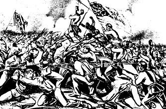

Week 6: Turning Points of the War
Confederacy Museum Provokes Dismay With Period Costume Ball The History of the African-American soldier
| ||||
| ||||
|
1. Josiah Gorgas, a Confederate official, wrote this in his diary on July 28th, 1863: "Events have succeeded one another with disastrous rapidity. One brief month ago we were apparently at the point of success. Lee was in Pennsylvania, Harrisburg, and even Philadelphia.Vicksburg seemed to laugh all Grant's efforts to scorn....Now the picture is just as sombre as it was bright then....It seems incredible that human power could effect such a change in so brief a space. Yesterday we rode on the pinnacle of success—today absolute ruin seems to be our portion. The Confederacy totters to its destruction." Using your reading and this week's lectures, explain how Gorgas' high expectations for Confederate success was dashed by the two Union victories at Gettysburg and Vicksburg. In your opinion, how did military success or failure specifically affect the morale of the homefronts? Use specific examples in your answer. 2. What is the relationship between the soldiers and their officers as depicted by Shaara in The Killer Angels? Select examples from both the North and South in your discussion. 3. How important was Emancipation to the Northern victory? 4. Does "Give Us a Flag" sum up the entirety of African-American experiences during the War? 5. How typical do you feel the experiences and opinions of Shaara's characters are in comparison to actual Civil War soldiers? Be able to discuss several specific examples from both North and South. | |
|
Lt. Col. Joshua Lawrence Chamberlain Robert Gould Shaw Fort Wagner |
Confederacy Museum Provokes Dismay with Period Costume Ball
Seeking to win a new generation of devotees, officials of the White House plan to hold a Confederate bail featuring hoop skirts, Rebel uniforms, and a color guard's presentation of the Stars and Bars. Black leaders expressed astonishment and outrage, asserting that the event would resurrect ghosts of a shameful era. The ball, organized by young professionals, is to be held on Feb. 24 at a restored gun foundry in downtown Richmond, a city that is 55 percent black. "This peels the scab off a sore that is trying to heal", said L. Douglas Wilder of Virginia, who grew up in segregated Richmond and became the country's first black elected governor. "That era is gone. You want it to regrow? It's history, sure. But it s a history of denying basic human rights." Mr. Wilder said he had not received an invitation. | Backers of the ball said their intentions were innocent and honorable. They said the Confederate White House and its companion, the Museum of the Confederacy, were designed not to celebrate the era of slavery but to tell the story. "We're looking to our future," said Brooke E. Fillmore, 27, chairwoman of the bail committee and the museum's assistant dIrector of development." If we don't get young people involved now, the older people will die out, and we won't have that young support." The ball is the latest front in a clash of cultures for a city In which some leaders are scrambling to modernize even as others argue for revering, and promoting, the past. The Museum of the Confederacy, which calls itself Richmond's oldest museum and is the area's fifth most-visited attraction, sits next to the White House, six blocks from the state Capitol. Mr. Davis, the only president of the Confederacy, lived in the mansion from 1861 until Richmond, the Confederate capital, fell to Union troops in 1865. About a year ago, the museum discussed, but rejected, adopting a less divisive name, such as the Museum of Southern Culture. "Our members would not appreciate that", said Janene E. Charbeneau, the museum's marketing director. "How do you appease the people that have been supporting you over the last 100 years, and yet also open it up to other groups?" Having elected to keep a title synonymous with racial and national division, officials now have a complicated marketing problem. Some people won't walk in the door, because of the word Confederacy, Ms. Charbeneau said. The museum, which has received small amounts of state and Federal money, has responded with frank, well-reviewed programs highlighting the roles of women and blacks during and after the Civil War. One current exhibit shows a poster from a raffle of a slave girl, as a hidden boom box plays spirituals. Although some visitors ask why the museum does not refer to the War of Northern Aggression, officials stress their role as a research Institution and say they do not take sides. Their collection includes 320 swords but also a female admirer's faded blue silk ribbon tied to a buttonhole of a Louisiana soldier killed in battle. Another relic is a doll with a hollow head that was used to smuggle medicine through blockades. Descendants of Confederate veterans can call the museum for appointments to view the flags of an ancestor's unit, and two or three people a year write to the museum to try to redeem Confederate currency. After the South surrendered, the White House was used as a headquarters by the Federal troops who occupied Richmond until 1870. The city used the mansion for a school until 1889, then planned to raze it. The budding was saved by a group of women who formed the nonprofit Confederate Memorial Literary Society, which to this day is the legal name of the parent of the museum and White House. The museum, originally in the White House basement, opened In 1896. The society's incorporation papers, refiled four years ago, ring with the yearning of the Lost Cause, the era after the war when disciples of Dixie built shrines and decorated graves with what a museum display calls "some of the characteristics of organized religion." The papers refer to "the late war between the States" and the "Struggle", and describe the mansion as "the former home of the Honorable Jefferson Davis, late President of the Confederate States of America." About 400 people are expected at this month's soiree, called the Bonnie Blue Centennial Bail, after a flag of secession. Organizers said they did not know whether any blacks would attend, but said they did not expect many. Neil A. Chiappa, 45, a member of the ball committee, said, "We realize that there's always going to be an aspect of the population that we're not going to appeal to under any under circumstance." Roger H. W. Kirby, 30, a member of the ball committee and a museum trustee, said everyone was welcome. "At the same time, you can't totally obscure what your greatest asset is," Mr. Kirby said. "Our asset is the Confederacy. When you do that, I think you start to blur your niche." The organizers said they had not considered the delicate question of whether black people will be among those serving. That's probably an issue that the caterer would have to deal with, Ms. Fillmore said. The caterer, Suzanne Wolstenholme, said blacks and whites would be among the night's managers, bartenders, carvers and servers. Tickets, available from the museum, are $75 for each couple. In addition, the committee mailed invitations, which say, "Black or white tie or period dress preferred." Annette C. Price, a historic costumer in Varina, Va., said over two dozen guests had hired her to create hoop-skirt outfits for $100 to $500. Gray wool uniforms are popular with the men. "I don't expect any Yankees", Mrs. Price said. When guests arrive, tents will be pitched and campfires will be blazing outside the Tredegar Iron Works, which produced the armor plate for the frigate Merrimack. Inside, a fife and drum corps will play as guests mingle before beginning a menu that includes smoked turkey, pickled watermelon rind, sweet-potato biscuits, black-eyed pea salsa and oysters simmering in cast-iron chafers. Guests will waltz to antebellum music, then a Confederate reenactment group will present five flags. The American flag Is not among them. Finally, guests will jam to a popular local band. Jack W. Gravely, a former Virginia president of the National Association for the Advancement of Colored People, said the gala sent a chilling message. "To put on a ball in this day and time with all the regalia of yesteryear creates a feeling of acceptability, of apology, of excuse for one of the most racist and repressive epochs in our history," Mr. Gravely said. "By participating, you are acquiescing." |
Past Imperfect: Glory
Can movies teach history? For Glory, the answer is yes. Not only is it the first feature film to treat the role of black soldiers in the American Civil War, but it also one of the most powerful and historically accurate movies ever made about that war. After more than fifty years on the screen, Scarlett O'Hara and Rhett Butler are still teaching false and stereotyped lessons about slavery. Perhaps Glory can restore the image of courageous black soldiers that prevailed in the North during the latter war years, before the process of romanticizing the Old South obscured it.
Glory tells the story of the Fifty-fourth Massachusetts Volunteer Infantry from its organization during the winter of 1862-1863 to its climactic assault the following summer against Fort Wagner, a massive earthworks guarding the approach to Charleston harbor. The Union's naval effort to capture Charleston failed earlier in 1863--and so did the assault on Fort Wagner led by the Fifty-fourth, which suffered nearly fifty percent casualties. Among those killed was Col. Robert Gould Shaw, Glory's protagonist, who died leading his men over the parapet.
However, if in this sense the attack was a failure, in a more profound sense it was a success of historic proportions. The unflinching behavior of the regiment in the face of an overwhelming hail of lead and iron answered the skeptic's question, Will the Negro fight? It demonstrated the courage of the race to millions of white people in both the North and the South who had doubted whether black men would stand in combat against soldiers of the self-styled master race.
The recruitment of black combat troops was still regarded as a risky experiment when the Fifty-fourth's six hundred men moved out at dusk on July 18 to attack Fort Wagner. During the next few hours they more than justified that experiment Forced by the ocean on one side and swamps on the other to approach the fort along several hundred yards of narrow, exposed beach, the regiment moved steadily forward through bursting shells and murderous musketry. Losing men every step of the way, they nevertheless continued right up the ramparts and breached the parapet before the immense strength of the works stopped them. The portrayal of this attack in Glory is the most realistic combat footage in any Civil War movie.
The white officers of the Fifty-fourth represented the elite of New England society. Some, including Shaw, were Harvard alumni and sons of prominent families. Several, also including Shaw, had already fought with white regiments during the first two years of the war. Antislavery in conviction, they had willingly risked stigma and ridicule to cast their lot with a black regiment.
The Confederate defenders of Fort Wagner stripped Shaw's corpse and dumped it into an unmarked mass grave with the bodies of his black soldiers. When the Union commander sent a flag of truce across the lines a day later to request the return of Shaw's body (a customary practice for high-ranking officers killed in the Civil War), a Confederate officer replied contemptuously, "We have buried him with his niggers."
The performance of the Fifty-fourth Massachusetts at Fort Wagner not only advanced the liberation of slaves but also helped to liberate President Lincoln from certain constitutional and political constraints. These restraints had earlier inhibited the president from making this war for the Union a war against slavery, an institution that Lincoln had often branded a "monstrous injustice."
If it is not literally true, as the movie s final caption claims, that the bravery of the Fifty-fourth at Fort Wagner caused Congress to authorize more black regiments-- this had happened months earlier, the example set by the Fifty-fourth did help transform potential into policy. However, Glory does not go into detail about the impact of the battle on northern opinion, nor does it provide much political context for the black soldier issue. In fact, the movie ends with the attack on Fort Wagner, although the Fifty-fourth continued to serve throughout the war, fighting in several more battles and skirmishes.
Except for Shaw, the principal characters in the film are fictional: There was no real' Maj. Cabot Forbes: no Emerson-quoting black boyhood friend of Shaw's named Thomas Searles; no tough Irish Sgt. Maj. Mulcahy; no black Sgt (and father figure) John Rawlins; no brash, hardened Private Trip. Indeed, there is a larger fiction involved here. The movie gives the impression that most of the Fifty-fourth's soldiers were former slaves. In fact, this atypical regiment was recruited mainly in the North, so most of the men had always been free. Some came from prominent northern black families; two of Frederick Douglass's sons were among the first to sign up. The older son was sergeant major of the regiment from the start. (The regiment's young adjutant, wounded in the Fort Wagner assault, was Garth Wilkinson James, brother of William and Henry James.)
Real historical figures such as these could have provided the frame work for a dramatic and important story about the relationship of northern blacks to slavery and the war—and about the wartime ideals of New England culture. But the story that producer Freddie Fields, director Edward Zwick, and screenwriter Kevin Jarre chose to tell is not simply about the Fifty-fourth Massachusetts but about blacks in the Civil War.
Most of the 178,000 black soldiers (and 10,000 sailors) were slaves until a few months, even days, before they joined up. They fought for their freedom and for the freedom of their families and their people. This was the most revolutionary feature of a war that wrought a revolution in America by freeing four million slaves and uprooting the social structure of half the country. Arms in the hands of slaves had been the nightmare of southern whites for generations. At Fort Wagner, the nightmare came true. Fighting for the Union bestowed upon former slaves a new dignity, self-respect, and militancy, which helped them achieve equal citizenship and political rights for a time—after the war.
Many of the events described in Glory are also fictional: the incident of the racist quartermaster who initially refuses to distribute shoes to Shaw's men; the whipping Trip receives as punishment for going AWOL; the regiment's dramatic refusal on principle to accept less pay than white soldiers, which shames Congress into equalizing the pay of black soldiers (this actually happened, but at Shaw's initiative, not Trip's); the religious meeting the night before the assault on Fort Wagner.
However, there is a larger truth. Glory's point is made symbolically in one of its most surreal and, at first glance, irrelevant scenes. During a training exercise, Shaw gallops his horse along a path flanked by stakes, each holding aloft a watermelon (in February in Massachusetts?). Shaw slashes right and left with his sword, slicing and smashing every watermelon. The point becomes dear when we recall the identification of watermelons with the darky stereotype. If the image of smashed watermelons in Glory can replace that of moonlight and magnolias in Gone with the Wind as America's cinematic version of the Civil War, it will he a great gain for trust.
The History of the African-American soldier
 |
The events that led to the action on Fort Wagner, an epochal moment In African American history, represented a radical evolution of the scope and purpose of the Civil War. The original war aims of Abraham Lincoln's administration had been to suppress an insurrection in eleven southern states and restore them to their place in the Union. The North conceived of this war as a limited one that would not fundamentally alter the American polity or society--including slavery. The four slave states that remained loyal to the union would not have supported a war in 1861 to abolish slavery. Neither would have the Democrats, who constituted nearly half the northern electorate. Furthermore, the Constitution that the North was fighting to defend guaranteed the protection of slavery In states that wanted it. Therefore, despite Lincoln's personal abhorrence of slavery, he could not willfully turn this war for the Union into a war against slavery. Nor could his War Department in 1861 accept black volunteers in the Union army, for to do so would have sent the signal that this was to be an abolitionist's war.
By 1862, though, the conflict was Becoming just such a war. It was a total war now, not merely a militia action to suppress an insurrection. And when northern troops invaded portions of the South, thousands of slaves flocked to Union army posts. Abolitionists and Radical Republicans insisted that these slaves must be granted freedom. At the same time, the success of Confederate military offenses in 1862 convinced Republicans, including Lincoln, that the North could not win the war without mobilizing all of its resources. They also concluded that they would have to strike against every southern resources used to support the Confederate war effort.
The most important of the South's resources was slavery, since slaves constituted the majority of the southern labor force. In the summer of 1862, Congress enacted legislation confiscating the Property of Confederates, including slaves. Lincoln followed this with the Emancipation Proclamation to free the slaves, invoking his power as commander-in-chief to seize enemy property used to wage war against the United States. The Emancipation Proclamation also stated that blacks would be, "received into the armed service of the United States."
These events underlay the decision of Gov. John Andrew of Massachusetts to organize a black regiment, which became the Fifty-fourth Massachusetts. A bold experiment, black soldiers could be made acceptable in the context of the time only if they were commanded by white officers. Andrew was determined to appoint officers "of firm antislavery principles...superior to a vulgar contempt for color." In Robert Gould Shaw, son of a prominent abolitionist family, he found his man. As black volunteers came into the training camp near Boston during the spring of 1863, Shaw shaped them into a high morale outfit eager to prove their mettle.
Will the Black Soldier Fight?
One of the most
effective scenes in the movie depicts the Fifty-fourth
Massachusetts marching proudly through Boston, having
completed its training in May 1863. About the same time,
the New York Tribune, the leading northern newspaper and
a supporter of arming blacks to fight, observed that
most Yankees, while endorsing the policy, still wondered
whether the blacks would make good soldiers. A war
correspondent for the Tribune soon answered these doubts
when he vividly described the assault on Fort Wagner.
"Who asks now in doubt and derision, 'Will the Negro
fight?' The answer is spoken from the cannons's
mouth...it comes to us from...those graves beneath Fort
Wagner's walls, which the American people will surely
never forget."
The First Black Regiments
The Fifty-fourth
was neither the first black regiment organized, nor the
first to see combat. To test the waters, the War
Department had quietly allowed Union commanders of
forces occupying portions of the lower Mississippi
Valley, the Kansas-Missouri border, and the South
Carolina sea islands to begin organizing black regiments
in the fall of 1862. Four of these regiments fought in
actions connected with the Vicksburg campaign during May
and June 1863, winning plaudits for their performance.
However, these episodes received little publicity in the
Northern press.
The Draft Riots
The Fort Wagner attack came
just days after terrible draft riots shook New York
City. The July 13-16 riots were fueled in part by the
racism of Irish Americans who wanted no part of a war to
free the slaves. Black New Yorkers were the chief
victims of the rioters, who feared freed slaves would
come North to compete for jobs and social space. On July
15, a mob beat to death the nephew of Robert Simmons, a
sergeant in the Fifty-fourth; three days later, SImmons
was mortally wounded in the assault on Fort Wagner.
The draft riots occurred within the context of northern Democratic opposition to the Lincoln administration's war policies, including emancipation, the enlistment of black soldiers, and the draft. Democrats had done much to stir up the racial hatreds manifested by the rioters, who chanted the antiwar and antiblack slogans of the Copperhead wing of the party. In the aftermath, few Republican commentators missed the opportunity to juxtapose the draft riots with the heroic conduct of the Fifty-fourth at Fort Wagner, and to point out the moral: Black men who fought for the Union deserved more respect than white men who rioted against it.
Equal Pay
The federal government promised the
black soldiers of the Fifty-fourth the same pay as their
white counterparts; thirteen dollars a month. However,
they received only ten, three dollars was docked from
each of their salaries, supposedly to pay for their
uniforms. The soldiers refused to accept these terms and
campaigned for eighteen months until the government
finally granted them equal pay.
After the War
The death of Robert Gould Shaw
made a deeper impression on Yankee culture than that of
any other New Englander killed in the Civil War.
Clergyman Henry Ward Beecher wrote that Shaw's martyrdom
had regenerated Boston's past glory as America's cradle
of freedom: "Our young men seemed ignoble; the faith of
old heroic times had died...but the trumpet of this war
sounded the call and Oh! how joyful has been the sight
of such unexpected nobleness in our young men." Both
Ralph Waldo Emerson and James Russell Lowell extolled
Shaw in verse. Lowell wrote:
Right in the van,
On
the red rampart's slippery swell, he fell
With heart
that beat a charge, he fell
Forward, as fits a
man;
But the high soul burns on to light men's
feet
Where death for noble ends makes dying
sweet.